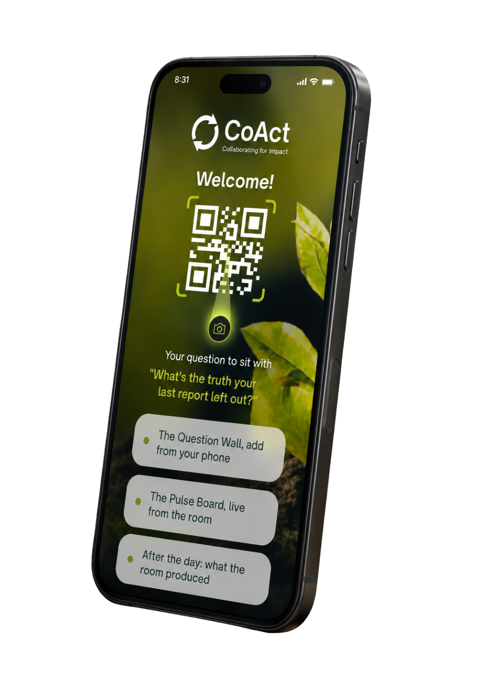
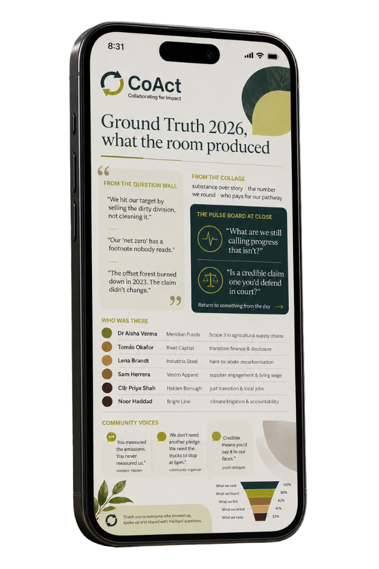

Two weeks out, every attendee receives a question to sit with, a note on how the day is built, and a badge with a QR code linked to a personal summit page.
This is not a standard conference. Some moments ask something of you. All of them are optional. None of them are difficult.
CoAct is a collaborative impact consultancy. It advises corporate clients on climate strategy, and refuses greenwashing and performative CSR. Ground Truth is built to hold its clients, and itself, to that same standard.

Every strategy is a balancing act. At the makers tables, teams stack the pieces of a plan: ambition, cost, evidence, dependency, and risk. Then they feel where it holds, and where it starts to tip.
Drag the stones. Build your own balance, or take it apart.
Draft a "climate-neutral" claim with a live model, then see which are now illegal.
Low light. No task. A place to sit with the day so far.
Tap to dim the lightsEach table opens with a question from the communities you affect.

Every attendee receives a report of everything Ground Truth produced: the question wall, the collage, the community voices, who was there, and what the room said, heard, and chose to keep.